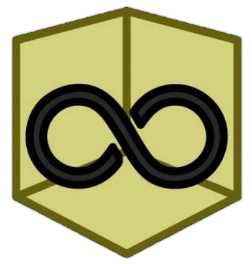

Kullanıcıların kendı kanallarını açıp vıdeo yükledıklerı bır servıs

Roblox'ta, arkadaş edinebilir, oyun yapılabilir yada oynanabilir. Roblox'ta oyun yapmak daha da kolaydır.

Steam'de aşırı pahalı oyunları satın alabileceğimiz bir uygulama/site.
Backrooms Wikipedia, bir creepypastanın levelleri hakkında bize bilgi veriyor.
Wikipedia, çoğu şey hakkında bize bilgi verir. Oyunlar, uygulamalar, creepypasta gibi şeylerde bize bilgi verir.